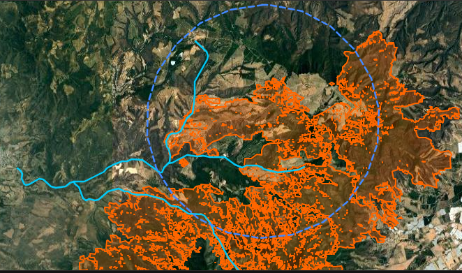

“A mí me sacaron de entre la palizada, el lodo y todo eso. Me sacaron, ni supe cómo porque estaba la pila de palizada. Fuimos los más afectados. De los que perdimos todo”.
Ese fue el testimonio que Ildelisa, comerciante de San Gabriel, compartió meses después de la tragedia. Ella vivía en la calle Independencia, justo donde troncos y lodo cubrieron viviendas por completo el 2 de junio de 2019, cuando, a pesar de no llover en la población, ocurrió un desastre por una avalancha que bajó de la sierra por el río Salsipuedes.
Cinco personas muertas, una desaparecida y al menos tres mil afectadas, ese fue el saldo oficial que las autoridades de Jalisco compartieron a medios de comunicación después de la evaluación realizada.
Los árboles que bajaron con olor a ceniza y otros con cortes perfectos llevaron a una conclusión: toda la materia orgánica que causó el desastre fue producto de los incendios de ese año y de la tala.
Hay algunos troncos con cortes perfectos, ningún incendio puede realizar cortes perfectos. También hay presencia de humos, de partes de carbón. Esa es la parte que nosotros tenemos a la vista y eso es lo que podemos compartir”.


Estragos de la avalancha del 2 de junio | Archivo
Hoy, las zonas quemadas y deforestadas que provocaron el desastre, ya son huertas aguacateras, no hay culpables detenidos y las sanciones por cambios de uso de suelo ilegal alcanzaron 1.7 mdp.
A través de un análisis de imágenes satelitales realizado para esta investigación con apoyo de IA (Claude) se pudo identificar la línea de tiempo que llevó a pasar de un bosque de pino y encino en la sierra que se encuentra en los límites de San Gabriel, Sayula y Zapotlán el Grande, a cientos de hectáreas de huertas aguacateras.
El incendio
En 2019 ocurrieron cinco incendios en la zona de influencia del río Salsipuedes. Cuatro de ellos fueron clasificados por la Comisión Nacional Forestal (Conafor) como superficiales dado que no consumieron árboles. Estos ocurrieron entre marzo y mayo en los parajes El Rincón del Capulín en Zapotlán el Grande; Los Pozos en Sayula, y Rosa de Castilla y El Anillo en San Gabriel. Entre todos consumieron 117.08 hectáreas.
Pero, entre el 5 y el 20 de mayo, el predio La Gatera se incendió y causó una afectación de 11,456.48 hectáreas, según datos oficiales de Conafor obtenidos vía transparencia, y su impacto fue mixto, es decir, arrasó con vegetación superficial, pero también con pinos y encinos. La extensión de este incendio alcanzó la cuenca del río Salsipuedes, pero también otras zonas de Sayula y Zapotlán el Grande.
Para esta investigación, se delimitó un área de 6 kilómetros de radio en torno a los afluentes del río para estimar el nivel de afectación que influyó en el desastre del 2 de junio de 2019. Se encontró que en esa área se quemaron alrededor de 4,616 hectáreas de bosque, el 40.29 por ciento del total.

Mapa de ocurrencia de incendios forestales en 2019 (zona naranja). Círculo azul, área delimitada para esta investigación. Líneas azules representan afluentes del río Salsipuedes | Fuente: Conafor - Inegi
El río Salsipuedes, de acuerdo con la información disponible en el Instituto Nacional de Estadística y Geografía (Inegi) en su red hidrológica, antes de llegar a la zona habitable de San Gabriel, recibe corrientes de al menos cuatro afluentes. Dos de ellos están en la zona de influencia de las áreas donde se desarrolló el incendio. Ese habría sido el recorrido de la avalancha del 2 de junio de 2019.
Tras el desastre, el entonces gobernador Enrique Alfaro Ramírez prometió investigar la tala ilegal y proteger los bosques.
“Después de haber salido de la emergencia, ahora viene una nueva tarea muy importante, el trabajo para evitar la tala clandestina y las sanciones a quienes hayan hecho algún tipo de cambio de usos de forestal a agrícola. Vamos a actuar con mucha firmeza, vamos a actuar sin contemplación”.
La denuncia

Funcionarios acudieron a denunciar la tala ilegal | Fuente: Gobierno de Jalisco
En julio de 2019, el gobierno de Jalisco acudió a la Profepa a interponer una denuncia por los incendios, la tala ilegal y los cambios de uso de suelo en la sierra que provocaron la avalancha de troncos en San Gabriel.
Vía transparencia, se tuvo acceso a una versión pública de la denuncia firmada por Juan Enrique Ibarra Pedroza, Macedonio Tamez Guajardo, Alberto Esquer Gutiérrez y Sergio Humberto Graff Montero, en esas fechas titulares de la Secretaría General de Gobierno (SGG), la Coordinación de Seguridad, la Secretaría de Agricultura y Desarrollo Rural (Sader) y la Secretaría de Medio Ambiente y Desarrollo Territorial (Semadet) de Jalisco, respectivamente.
En el documento, las autoridades estatales hacen mención que entre 2011 y 2019 identificaron cambios de uso de suelo en 108 predios boscosos para instalar huertas de aguacate en los municipios de Amacueca, Atoyac, Concepción de Buenos Aires, Gómez Farías, Mazamitla, Quitupan, San Gabriel, Sayula, Tamazula de Gordiano, Tonila, Tuxpan, Zapotitlán de Vadillo y Zapotlán el Grande, afectando 1,573.80 hectáreas.
La denuncia pidió investigar si esos cambios de uso de suelo fueron o no ilegales. Como pruebas presentaron una serie de mapas y estudios realizados por el Instituto de Información Estadística y Geográfica (IIEG) y el Fideicomiso para la Administración del Programa de Desarrollo Forestal de Jalisco (Fiprodefo), mismos que fueron testados en el documento entregado vía transparencia.
En respuesta, la Profepa informó vía transparencia para esta investigación periodística que en 2019 realizó una inspección a 14 de los 108 predios, todos ubicados en San Gabriel, lo que derivó en la clausura de 316.64 hectáreas de huertas de aguacate y siete sanciones económicas que sumaron en conjunto 1.7 millones de pesos.
Por este cambio de uso de suelo o las quemas realizadas en 2019, no hay personas detenidas.


Huertas clausuradas en San Gabriel | Fuente: Profepa
En 2021, Graff Montero, quien todavía era titular de la Semadet, reconoció que “lo único que supimos es que la Federación realizó una inspección en 300 hectáreas de las mil 500, nunca nos informaron qué pasó”.
Después del incendio y el desastre de 2019, se dejó descansar el bosque por el lapso de dos años, pero en la primavera de 2021 se dio un nuevo proceso de deforestación.
Un análisis realizado con apoyo de IA a las imágenes satelitales del periodo 2019-2026 encontró que alrededor de abril de 2021 se dio una caída abrupta en la cobertura forestal en uno de los predios y ya no hubo una recuperación rápida. Ese fue el momento clave de la deforestación.
Después, una revisión visual a las imágenes satelitales permitió identificar que las plantaciones ocurrieron entre 2021 y 2022. El análisis final concluyó que a partir de 2023 comenzó la etapa activa de producción agrícola, pues se notaron lapsos de recuperación de masa arbórea de forma estacional, durante el temporal de lluvias.
Línea de tiempo (2019-2026)
Nota metodológica: Para el análisis se tomó como punto focal el predio ubicado en las coordenadas 19.7741°N, 103.6577°O en los límites de San Gabriel y Sayula, sitio que fue deforestado tras 2019. Se realizaron mediciones del Índice de Vegetación de Diferencia Normalizada (NDVI por sus siglas en inglés) que mide el nivel de vegetación presente en determinada zona. Entre más cercano a cero el valor, menos cobertura vegetal existe.
Gracias al análisis de las imágenes satelitales y los niveles de vegetación, más una revisión detallada de forma visual, se pudo llegar a la conclusión de que el cultivo que se instaló en los predios deforestados fue aguacate, dado que los surcos de las huertas tienen una separación entre sí de entre 6 y 8 metros y, cada planta dentro del mismo surco, de alrededor de 5 metros, lo que es consistente con una huerta aguacatera.


Mediciones entre plantas y surcos | Fuente: Google Earth Pro
Como elemento adicional, se detectaron ollas de captación de agua empleadas para sistemas de riego.Tan sólo en una de las huertas hay dos ollas con dimensiones de aproximadamente 100 x 60 metros cada una, prácticamente lo equivalente a una cancha profesional de futbol.
Los datos obtenidos arrojaron que, en la zona de influencia del río Salsipuedes y sus afluentes, hubo deforestación tanto dentro de la zona incendiada como fuera.
Entre 2019 y 2025, al menos 672 hectáreas dentro del polígono del incendio fueron taladas y, de ellas, al menos 481 hectáreas ahora son huertas de aguacate. El resto del terreno corresponde a las ollas de captación, caminos o terrenos en los que no se detecta cultivo alguno, sino remoción de tierras.
Adicionalmente, fuera del polígono del incendio de 2019, deforestaron al menos 629 hectáreas, de las cuáles, 504 hectáreas son aguacateras.
Esto significa que en la zona revisada se perdieron alrededor de 1,301 hectáreas de bosque y aparecieron casi mil de nuevas huertas de aguacate.
Ahora, a siete años de distancia del desastre del río Salsipuedes en San Gabriel, el caso sigue impune, la sierra continúa convirtiéndose en un huerto aguacatero y, mientras tanto, las autoridades ya preparan el nuevo Récord Guinnes del guacamole más grande del mundo, evento que desarrollarán en Guadalajara el 18 de junio de 2026 en el marco del Mundial de Futbol de la FIFA.